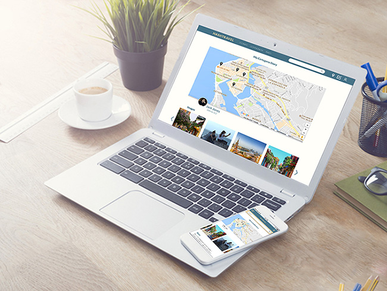
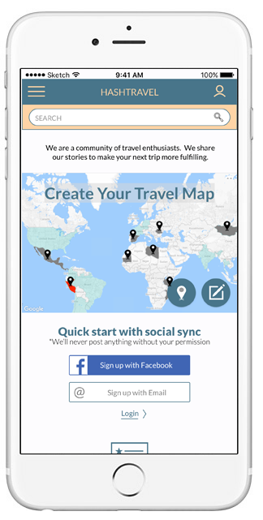
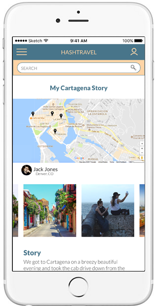
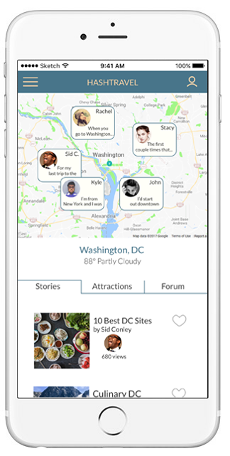
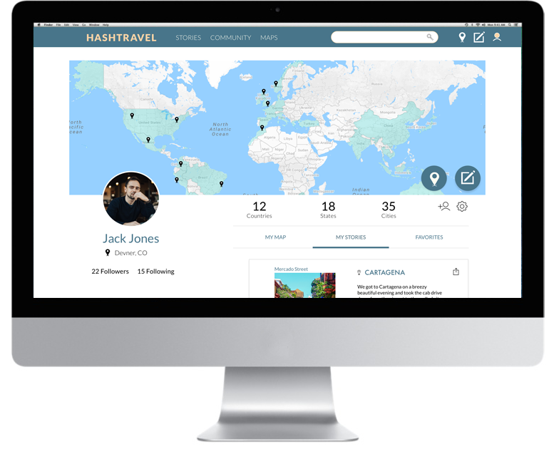
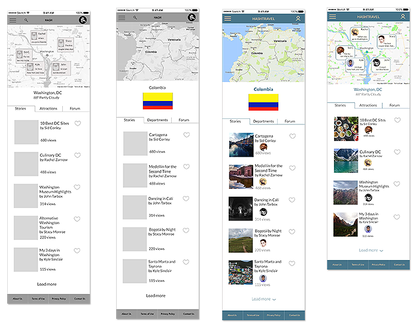
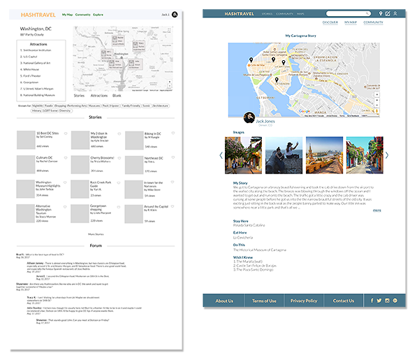

CHRIS EICHLERUX DESIGNER AND RESEARCHER
HashTravel aims to solve the broader questions of travel: to what country or city should I go, and why? It's not about flights and hotel rooms; it's about a community of people who love travel telling stories and giving advice to each other.
The HashTravel App is a young product with huge potential, so helping to create new designs for them was exciting. The task was to create new landing pages, user onboarding that communicated the purpose of HashTravel, and new ways to use maps, which were to be the center of the experience.
   How special was HashTravel? That was the first question that we needed to answer. In a travel tech field that is crowded and fast-growing, what was it offering and how could we help differentiate it through our work?
There are travel companies that started out answering the big questions about where someone might want to go. Most of those have drifted more towards e-ticketing for airline and booking hotel rooms. A review of major online travel sites confirmed what the HashTravel founder had suspected: that a crowdsourced community dedicated to broad discussion about travel and places would be unique on the web.
There are hundreds of ways that different sites present maps online, and they can be really fun. With new mapping technologies and libraries lots of graphic and exciting map experiences have become possible. How could HashTravel take advantage of this and create map-centered pages that would keep users exploring?
On HashTravel's side what is wanted is a vibrant community of users that produces interesting content. But what do the users really want or need?
HashTravel App already existed, so in this project one we were able to start with some user testing. These early tests of the existing product let us know what was working and what was not. To be able to start with these insights was invaluable
We needed more users though, so we posted a screener/research survey which received 55 responses. From these we contacted 7 for in-depth interviews about travel.
Interviews with insightful people guided us in our reimagining of HashTravel.
Bringing together all of the information we gathered, we created a new structure for HashTravel. Our tools were whiteboards, notebooks, and many Sketch files. We were dealing with an app and a user flow of some complexity and we needed to make sure that our most important user experiences did not get lost in the structure. What was the most important experience? After talking to our users we decided it was sharing stories about travel with each other.
We worked in successive iterations which we tested with users, gradually refining. Each team member took responsibility for different parts of the user flows, and in the end we brought to gether all our files and refined them with one aesthetic.
 